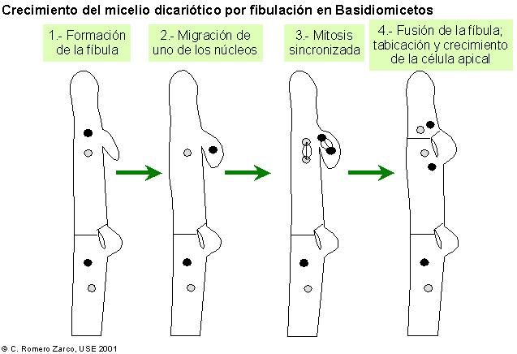
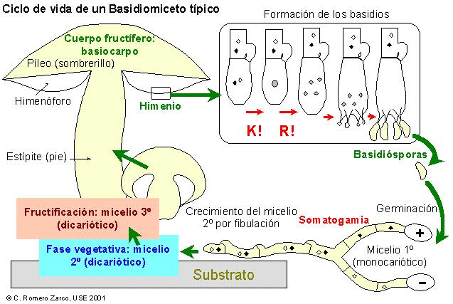
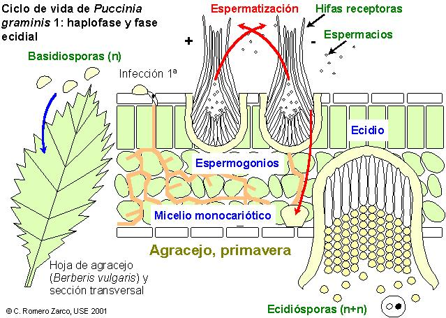
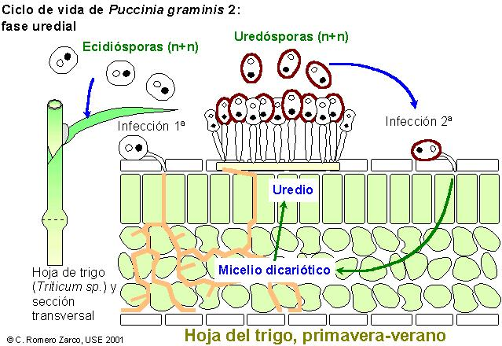
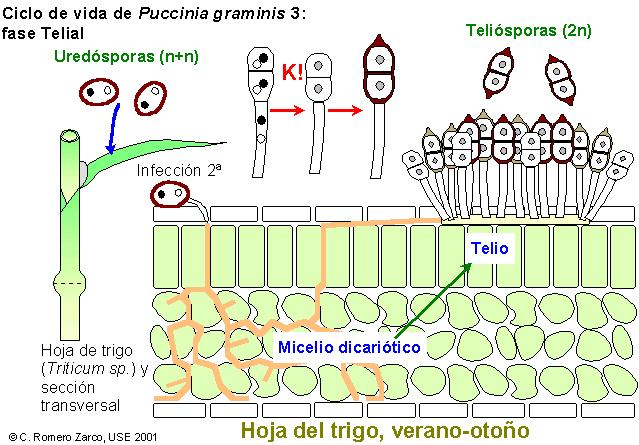
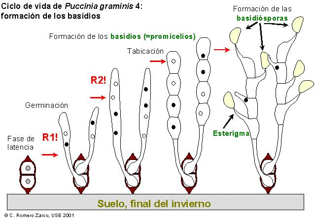
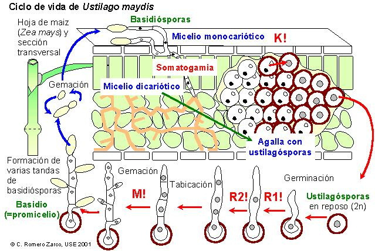

| Podredumbre roja:
degradan la celulosa y dejan como residuo lignina - Ver
foto |
| Podredumbre blanca: degradan principalmente la lignina y dejan residuos de celulosa |
| Alimentos | Agua | Proteínas | Grasas | H. de C. | Kcal/100gr. |
| Champiñón | 89% | 5% | - | 5% | 40 |
| Ternera | 75% | 20% | 1% | 1% | 90 |
| Zanahoria | 87% | 1% | 1% | 9% | 49 |
| Teliomicétidos | Fragmobasidiomicétidos | Holobasidiomicétidos |
| Royas, carbones, etc. | Setas gelatinosas | Hongos yesqueros y setas carnosas |
| Poros simples | Dolíporo | |
| Sin basidiocarpo | Basidiocarpo gelatinoso o céreo | Basidiocarpo carnoso o leñoso |
| Basidio a partir de esporas resistentes | Fragmobasidios o heterobasidios | Holobasidios típicos |




